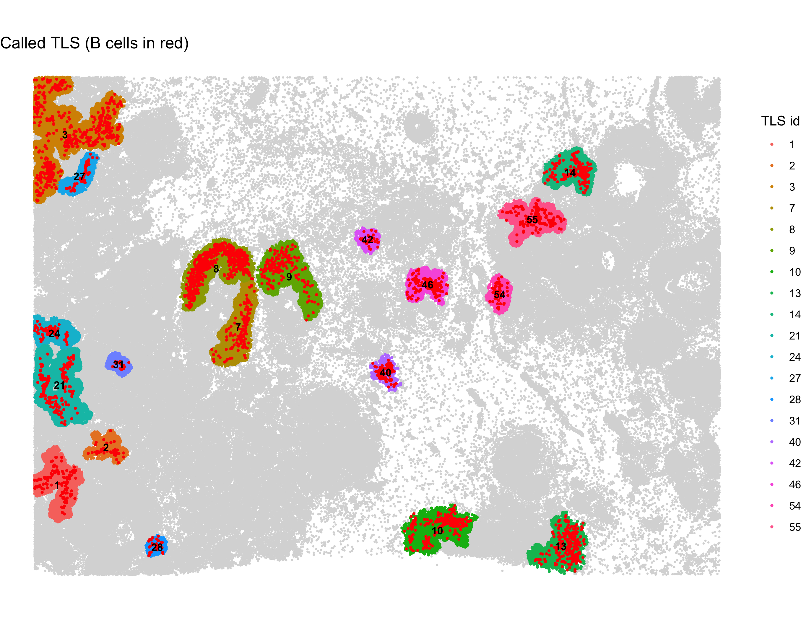
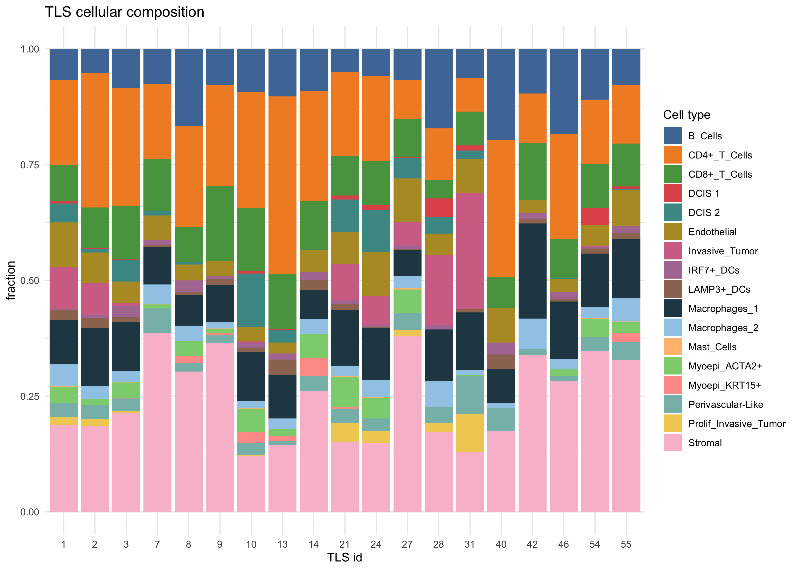
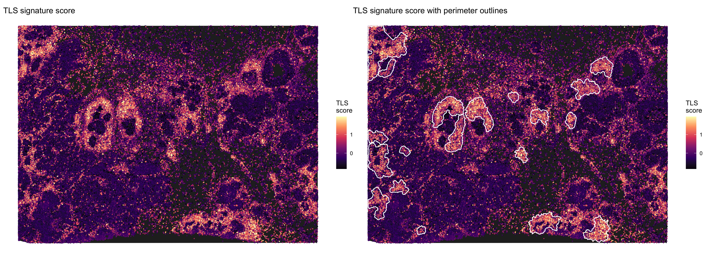
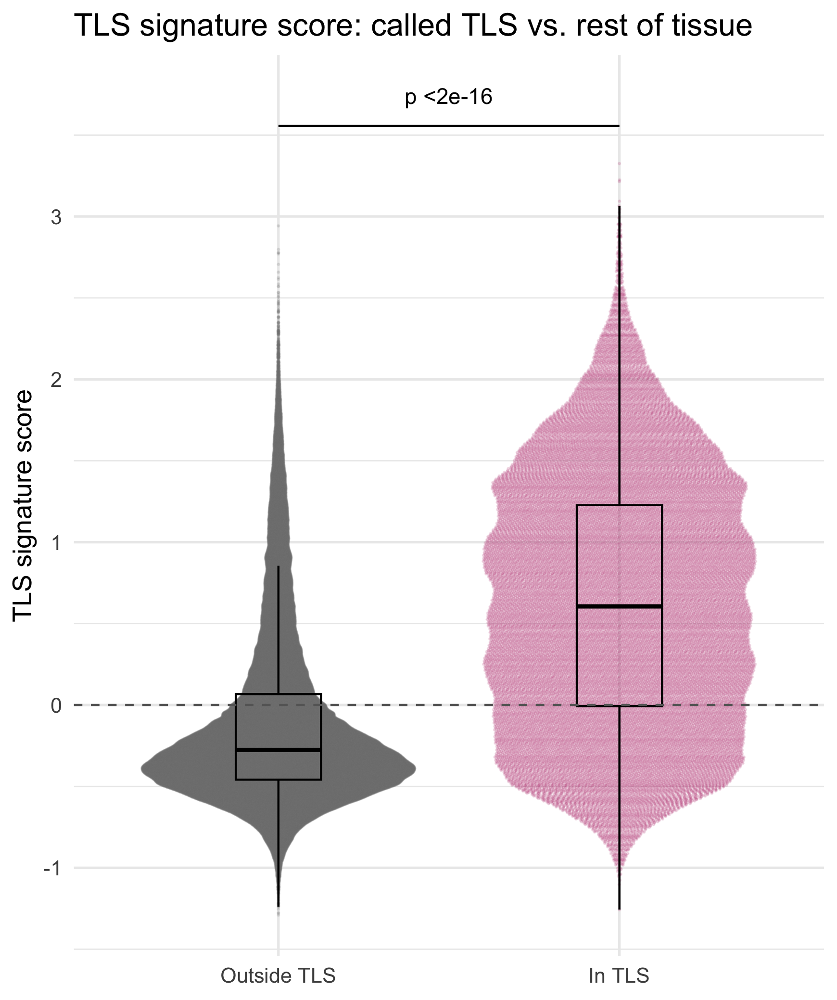

TLS Analysis
tls-analysis.RmdIntroduction
Tertiary lymphoid structures (TLS) are organized aggregates of B cells, T cells and dendritic cells that form in non-lymphoid tissue, including tumors. stGradient detects TLS from cell type annotations and validates the calls with a TLS gene signature score.
Step 1: Call TLS From Cell Types
call_tls() clusters B and T cells with DBSCAN, assigns
every cell within eps of a clustered lymphoid cell to that
aggregate, and calls an aggregate a TLS when it has at least
min_B B cells, min_T T cells, and a B cell
fraction of at least min_frac_B. This excludes pure T cell
infiltrates. Aggregates that contain mature dendritic cells
(dc_types, e.g. LAMP3+/DC-LAMP+) are flagged as
"mature-like (DC-LAMP+)".
library(stGradient)
seurat_obj <- call_tls(
seurat_obj,
fov_name = "fov",
celltype_col = "first_type",
b_types = c("B_Cells"),
t_types = c("CD4+_T_Cells", "CD8+_T_Cells"),
dc_types = c("LAMP3+_DCs", "IRF7+_DCs"),
eps = 50, # neighborhood radius (microns for Xenium)
minPts = 20,
min_B = 20,
min_T = 20,
min_frac_B = 0.05
)
# Per-TLS composition and maturity
get_tls_summary(seurat_obj)This adds TLS_id (NA outside called TLS)
and in_TLS metadata columns. Use
get_tls_summary(seurat_obj, called_only = FALSE) to see all
candidate aggregates, including those that failed the TLS criteria.
Step 2: Visualize TLS Calls
# Spatial map: TLS colored by ID, B cells in red
plot_tls_map(seurat_obj, celltype_col = "first_type")
# Cell type composition of each TLS
plot_tls_composition(seurat_obj, celltype_col = "first_type")
Step 3: Score a TLS Gene Signature
add_tls_score() scores each cell with
Seurat::AddModuleScore() using
tls_signature_genes() by default. Genes missing from the
panel are dropped.
tls_signature_genes()
seurat_obj <- add_tls_score(seurat_obj, assay = "Xenium")If AddModuleScore() fails on a small panel, lower
nbin (e.g. nbin = 12).
Step 4: Visualize the Signature Score
# Score with white perimeter outlines around each TLS
plot_tls_score(seurat_obj, highlight = "outline")
# Score with cyan rings on TLS cells and TLS ID labels
plot_tls_score(seurat_obj, highlight = "ring", label_tls = TRUE)
# Score only
plot_tls_score(seurat_obj, highlight = "none")
Step 5: Check That Called TLS Score Higher
tls_stats <- summarize_tls_score(seurat_obj)
tls_stats$by_status # in vs. outside TLS
tls_stats$by_tls # per TLS, lowest mean score first
tls_stats$wilcox_p
plot_tls_score_comparison(seurat_obj, type = "beeswarm")
plot_tls_score_comparison(seurat_obj, type = "violin")
TLS with low mean scores in tls_stats$by_tls may be
false positives worth reviewing. The beeswarm plot uses the
ggbeeswarm package if installed.